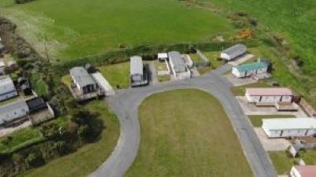
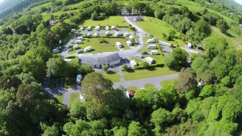
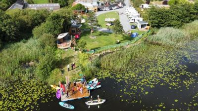

Carne Beach Caravan and Camping Park
It is located in the beautiful picturesque sunny South East of Ireland.
It is a family caravan site and parties and loud music is not welcome after 11 pm.
http://www.carnebeach.com/Riverhollow Wild Camping
Come and pitch you tent or hammock in the wild at Riverhollow Nature Reserve
Where you can build your own fire, cook and sleep under the stars.
There is also a communal area with a large fire pit to accommodate groups.
https://www.facebook.com/riverhollowwildcamping/Tree Grove
we are a small, family-run park located just outside Kilkenny City.
We have made the park as practical as possible for you the tourer, with a logical layout to suit both the terrain & the campers needs.
https://kilkennycamping.com/
Glen of Aherlow Caravan & Camping Park
The Park is centrally located within easy walking distance of Tourist Information Office, Nature Park, Aherlow House Hotel and local restaurants.
Because of its central location this Park is ideally situated for touring holidays.
This Park is situated right in the heart of one of the most picturesque valleys in Ireland.
Surrounded as it is by woodland and farmland the Park offers a quiet and relaxing holiday in a country environment.
https://tipperarycamping.com/Adare Camping and Caravan Park
It is a family run park extends a warm welcome to its visitors, whether camping or with caravan or motorhome.
Use the park to tour from or break your journey and stay a night or two.
The park is conveniently located just 3km from the picturesque village of Adare, which is renowned for its historic surroundings and is a very popular stop for tourists from all over the world.
A lovely river walk leads to old ruins which beg to be explored.
https://www.adarecamping.com/Tipi Adventure Ireland
It is inspired by love for the outdoors.
Camping with family and close friends allows everyone an opportunity to wind down and enjoy each others' company with the simpler things in life.
https://www.tipiadventures.ie/
Wicklow Way Camping
It sits overlooking the Lough Dan glacial valley at Oldbridge on the Wicklow Way.
It’s the traditional stop on Ireland’s oldest and most famous long distance trail.
Up until now this natural resting place had no where for a hiker to camp.
Now this has changed with Wicklow Way Campsite.
https://www.wicklowwaycamping.com/Kittys Camping
They are a small quirky Eco campsite ,family run based at the foothills of the Burren national park Co.Galway a very beautiful part of the west of Ireland.
The campsite has a very warm and comfortable communal kitchen,lounge area for all guests to escape the bad weather and sit by the fire.
https://www.kittyscamping.com/O'Connors Riverside Camping & Caravan Park
Centrally located in the village of Doolin on a unique setting overlooking the Aille River.
Riverside Camping is a small, friendly, family-run park constructed within our farm grounds, to the highest hygiene standards.
It is well sheltered and personally supervised.
The site is within walking distance from all our Pubs and shops.
https://www.campingdoolin.com/Whispering Willow
It is a favourite spot for many travellers visiting the Cariboo.
Boasting private campsites, fire pits, picnic tables, beautiful trees and a sparkling creek to cool off in, Whispering Willows welcomes you!
Whether you are looking for an overnight rest area or a longer-term home-away-from-home, we offer both tenting and full-service sites.
https://www.wwcamp.ca/Lough Ree East Caravan & Camping
Caravan and camping park, located on Lough Ree, close to Athlone.
Jetty, ideal for water sports. Disabled toilet and shower facilities.
Local pub close by.
https://loughreeeastcamping.wixsite.com/loughreeeastPortlick Scout Campsite
Situated on the Eastern shores of Lough Ree, Portlick Scout Campsite is widely regarded as one of the finest facilities of it’s kind in Ireland.
Our Campsite was opened over 12 years ago and since then, thousands of young people from all over Ireland and beyond have enjoyed the Portlick experience.
It has 14 acres of camping space, 3 acres of forestry, and 1 acre of private shoreline are just some of the ingredients that go to make Portlick Scout Campsite such a special place.
https://portlickscoutcampsite.com/Gailey Bay Caravan & Camping Park
It is a friendly and family-run business located along the shores of the majestic Lough Ree in Co. Roscommon and just a short distance from Roscommon Town.
The park is an expanse of more than 1 hectare with 27 pitches.
It includes a range of facilities for guests, including a TV lounge, pool room, kitchen and children’s play area.
https://galeybaycamping.ie/Lough Derraghvarra Camping And Holiday Centre
It is a picturesque camping, caravanning, and campervan park situated on the shores of
Lough Derravaragh in Multyfarnham, conveniently located just off the N4.
In addition to providing a stunning lakeside location, the center offers various amenities such
as on-site boat hire for fishing and leisure activities, a cozy café, and a mini golf course for added entertainment.
Connemarra Caravan And Camping Park
It will welcome you to the renowned Lettergesh Beach with is white sands and turquoise waters.
They offer a range of facilities in breathtakingly beautiful surroundings.
You’ll find yourself wanting to come back again and again!
https://connemaracamping.com/Carrowkeel Camping and Caravan Park
Carrowkeel Camping & Caravan Park is a well maintained campsite in the heart of Co. Mayo
The park is bordered by the Clydagh River.
They cater for 28 caravans or motorhomes on hardstands (with 16 Amp electric sockets each) and 30 tents (with 6 power sockets of 6 Amp).
https://www.facebook.com/p/Carrowkeel-Camping-Caravan-Park-100063475031476/Row Campsite
They offers a total of 18 pitches for camping enthusiasts.
Located behind the farm cottage and on the picturesque shoreline of Lough Oughter,
the campsite provides 14 grass pitches for tents and 4 hard standing pitches.

Camp Gregory
Camp Gregory provides summer camp programming for children from kindergarten to 10th grade that focuses on critical thinking, problem-solving,
teamwork, and personal development, all while utilizing our natural setting as a living classroom.
Kids learn while having fun!
In an effort to afford all children the transformational experience of summer camp, every camper is subsidized, and scholarships are awarded to children every season.
Their fundraising efforts throughout the year fund our camp programming, allowing us to continue to keep summer camp accessible to all.
https://campgregory.ie/Gyles Quay Caravan & Camping Park
It is close to Dundalk, situated beneath the Cooley Mountains and overlooking Dundalk Bay in County Louth.
Set in the Cooley Peninsula in one of the most attractive and unspoilt areas of the North East of Ireland.
It has a clean and safe beach with access from the site to the shoreline.
https://gylesquaycaravanpark.ie/